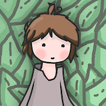

Feldup

Qui est Feldup ?
Feldup est un youtubeur de 22 ans passioné par horreur , il est très connu pour ses video lost media, iceberg sur les traumas d'enfances et ses secrets sur youtubes
Feldup ne fait pas que de l'horreur, il fait du divertissement (pas sur sa chaine) sur la chaine de TheoBabac.